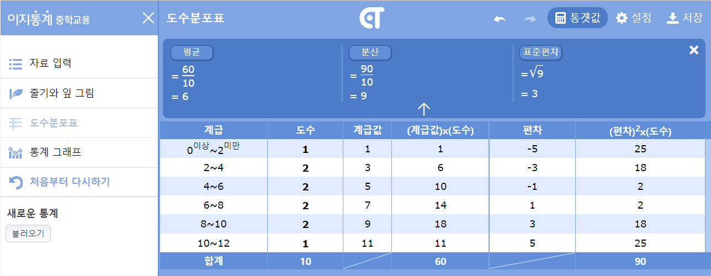
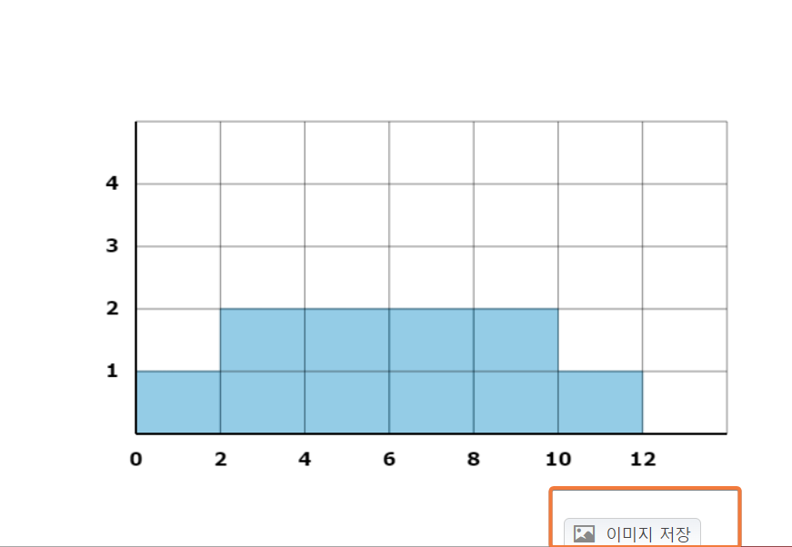
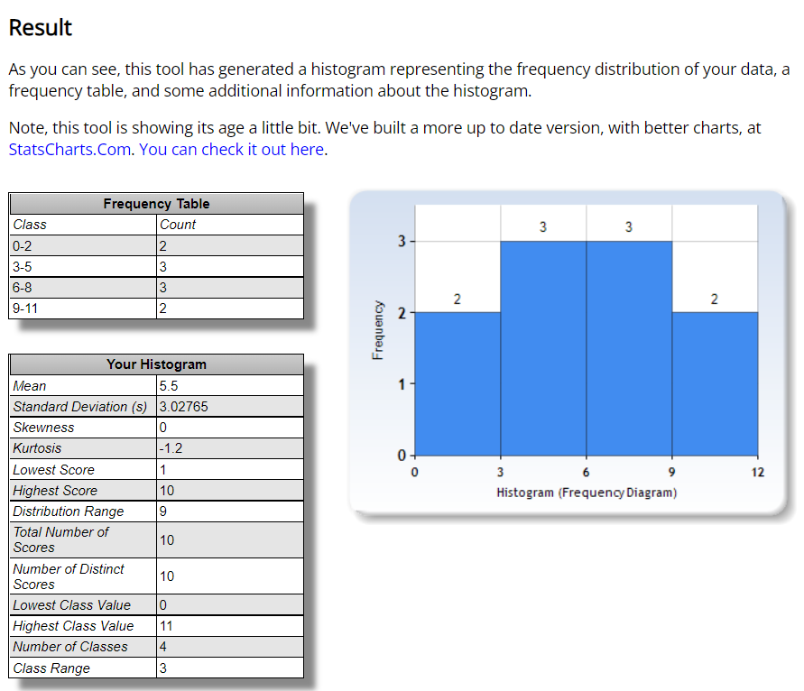

stateDiagram 과외 --> 이론 교실 --> 이론 이론 --> 예제풀이 예제풀이 --> 문제풀이 문제풀이 --> 문제풀이
(중등학습 통계교육과정)
중등학습 과정을 기준으로 통계교육에 대한 학습과정을 살펴보았을 때
으로 구성되어 있는 것으로 파악이 됩니다.
매체의 종류와 관계 없이 학생이 문제를 접근하고 해결하는 방식에 따라 분류
이론 학습 후 문제풀이하는 일반적이고 전형적인 학습방식
stateDiagram 과외 --> 이론 교실 --> 이론 이론 --> 예제풀이 예제풀이 --> 문제풀이 문제풀이 --> 문제풀이
도구를 이용하여 수동계산이 아닌 자동계산 방식으로 정의해보았습니다.
중등과정의 경우 잘 만들어진 온라인 도구를 이용하여 실습을 해볼 수 있는 다양한 환경들이 구비되어 있습니다.
stateDiagram 데이터셋 --> 입력 입력 --> 결과출력 결과출력 --> 저장
https://ebsmath.co.kr/easyTong


https://www.socscistatistics.com/descriptive/histograms/

개인 또는 모둠을 통해 해당 학습에 대한 개념을 기초로 실습하고 학생들과 발표를 진행하고 성적에 반영합니다.
stateDiagram 모둠 --> 프레젠테이션자료 프레젠테이션자료 --> 발표
잘 살펴보면 아쉬운 부분이 조금씩 보여집니다.
멘붕에 가깝습니다.
중등1학년 과정 통계에 도수분포표(histogram)에 대해 배우게 됩니다.
이론을 친절하고 정확하게 가르쳐 줍니다. 하지만 그져 가르쳐줄 뿐입니다.
계급(階級), 도수(頻度數), 분포(分布)그저 배우고 문제를 풀어낼 따름입니다.
이 이론은 어딘가에 어떤 문제를 풀어 실제 삶에 사용하고 있는 것일 겁니다. 하지만 학생들에게는 그렇지 않습니다.
저는 이것을 죽은 이론이라고 표현하고 싶습니다. 성적과 입학외에는 사용할 수 없는 이론이기 때문입니다.
웹기술의 뛰어난 발전과 인프라 고도화에 따라서 마음만 먹으면 언제든지, 어디서든 실습할 수 있는 환경과 도구를 가지게 되었습니다.
실제로 학습과정에서 실습도구를 안내하고 실습을 수행합니다.
실습은 그것으로 끝이나고 맙니다.
배운이론의 숫자가 나오는 것을 눈으로 보기만 할 뿐입니다.
학생들이 적극적으로 활동하고 그룹활동을 통해 팀으로 일을 해내는 것에 대한 훈련과정으로 잘 정착하고 있다고 보여집니다.
수행평가에 매우 많은 부분의 도구로 활용하는 것이 프레젠테이션입니다. 최근에는 오프라인 오피스보다 온라인 도구를 많이 사용하고 있는 편이고 구글 프레젠테이션등을 통해 관련 이론에 대한 부분을 소개하고 필요하면 다양한 애니메이션이나 동영상 촬영을 통해 공유하기도 합니다.
하지만 무언가 결여된 느낌은 지울수가 없습니다.
무엇이 결여된 것일까요?